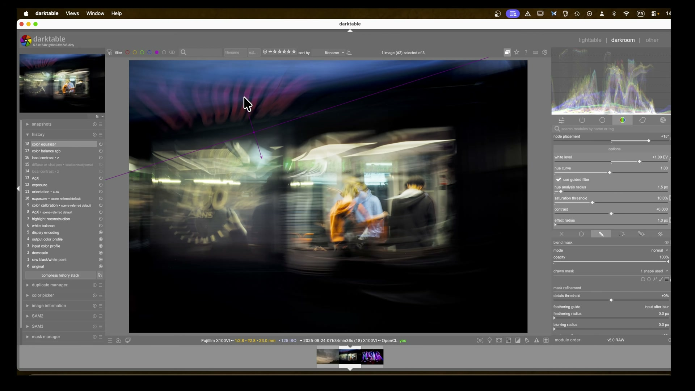
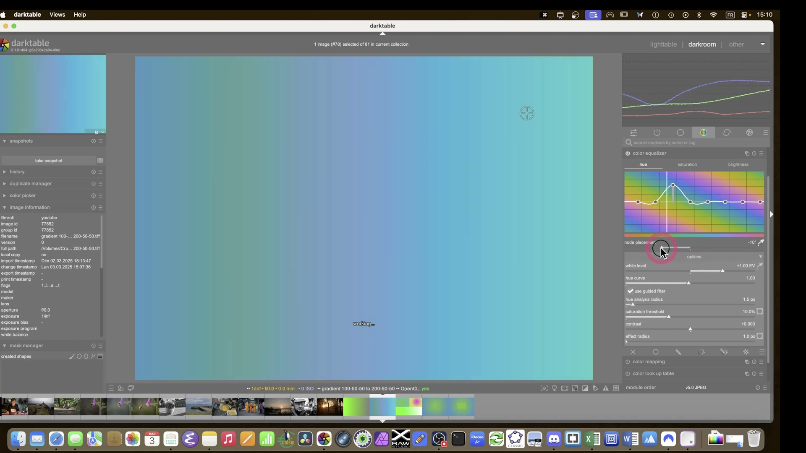
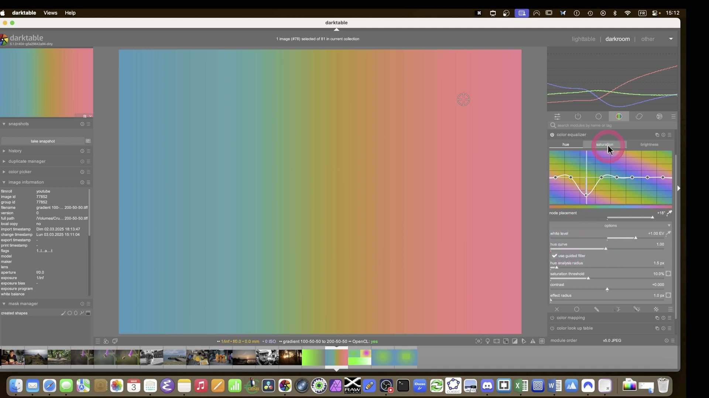
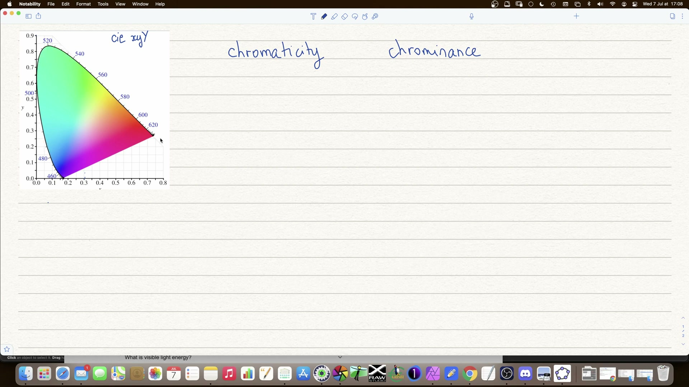
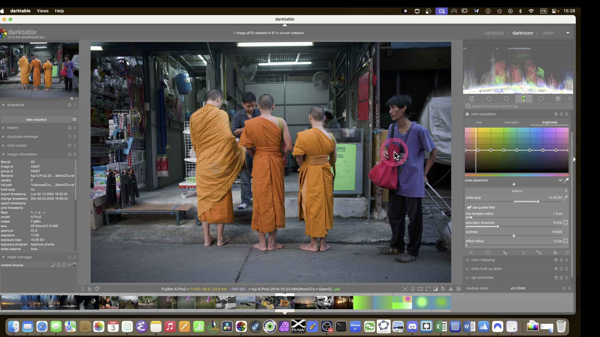

Color Equalizer¶
Il modulo Color Equalizer e' uno strumento di manipolazione cromatica avanzata che opera nello spazio colore HSL (Hue, Saturation, Lightness). Permette di regolare selettivamente tonalita', saturazione e luminosita' per specifiche gamme di colore tramite curve interattive e un sistema di mascheramento cromatico integrato.[^ce-in-depth]
Come funziona¶
Il Color Equalizer analizza l'immagine e costruisce una maschera basata sulle proprieta' cromatiche dei pixel. A differenza di Color Balance RGB -- che lavora nello spazio RGB lineare con bilanciamento per ombre/mezzetinte/luci -- il Color Equalizer opera su una rappresentazione HSL, consentendo selezioni basate sulla tonalita' (hue) del colore.
Spazio HSL e mascheramento cromatico¶
Il modulo utilizza tre parametri fondamentali per costruire la maschera di selezione:
| Parametro | Descrizione |
|---|---|
| Hue analysis radius | Raggio di analisi della tonalita' (in pixel). Media i colori circostanti per evitare selezioni erratiche causate da rumore o texture. Valori tipici: 1.5-10 px.[^ce-in-depth] |
| Saturation threshold | Soglia di saturazione minima (%). Esclude le aree poco sature (vicine al grigio) dalla modifica. Valore predefinito: 10%.[^ce-in-depth] |
| Effect radius | Raggio dell'effetto (in pixel). Controlla la morbidezza della transizione ai bordi della maschera. Aumentarlo riduce lo "spill" (traboccamento) dell'effetto su zone adiacenti.[^ce-in-depth] |
Guided filter
L'opzione Use guided filter applica un filtro guidato che fonde le correzioni con i toni circostanti, producendo transizioni piu' naturali. Particolarmente utile per i toni della pelle.[^ce-in-depth]
Le tre schede¶
Il modulo e' organizzato in tre tab principali:
Permette di ruotare i colori lungo il cerchio cromatico. Ogni nodo sulla curva rappresenta una tonalita' e puo' essere spostato in gradi (+/- 180 gradi). A differenza di saturazione e luminosita', la curva hue permette di regolare l'ampiezza dell'effetto per ogni nodo.[^ce-in-depth]

Uso tipico: Correggere dominanti cromatiche selettive, trasformare colori specifici (es. rendere un cielo piu' caldo), isolare colori per conversioni creative.
Controlla l'intensita' dei colori per ogni gamma tonale. Nodi positivi aumentano la saturazione, negativi la riducono. Non supporta la regolazione dell'ampiezza dell'effetto.[^ce-in-depth]

Uso tipico: Aumentare la vividezza di colori specifici senza alterare il resto dell'immagine, desaturare selettivamente elementi di disturbo.
Regola la luminosita' per ogni tonalita'. Opera come un equalizzatore tonale ma selettivo per colore anziche' per luminanza.[^ce-in-depth]

Uso tipico: Illuminare i toni della pelle, scurire cieli, controllare la luminanza di elementi specifici prima della conversione in B/N.
Controlli aggiuntivi¶
| Controllo | Funzione |
|---|---|
| White level | Limita il valore massimo di luminosita' consentito per i pixel modificati. Utile per prevenire il clipping nelle alte luci quando si aumenta la luminosita' di colori molto saturi.[^ce-in-depth] |
| Contrast | Indurisce o ammorbidisce la transizione della maschera cromatica. Valori negativi rendono la transizione piu' graduale, valori positivi piu' netta.[^ce-in-depth] |
Ctrl+clic per slider HSL
Premendo Ctrl+clic sulla griglia cromatica si accede a slider individuali stile Lightroom per ogni canale, offrendo un controllo piu' preciso sulla posizione dei nodi.[^ce-in-depth]
Quando usare Color Equalizer vs Color Balance RGB¶
I due moduli hanno scopi complementari ma distinti:

| Caratteristica | Color Equalizer | Color Balance RGB |
|---|---|---|
| Spazio colore | HSL (Hue, Saturation, Lightness) | RGB lineare (JzCzHz) |
| Selezione | Basata sulla tonalita' (hue) del colore | Basata su ombre/mezzetinte/luci |
| Maschera interna | Si (automatica, basata su hue/saturation) | No (usa maschere parametriche esterne) |
| Curva interattiva | Si, con nodi posizionabili | No, controlli globali per zona |
| Ideale per | Correzione selettiva di colori specifici | Bilanciamento cromatico globale, look creativo |
| Conversione B/N | Si, controlla la luminanza dei singoli colori | No, non progettato per questo |
| Presenza di preset | Si (es. skin) | Si |
Linee guida pratiche¶
Usa Color Equalizer quando:
- Devi regolare la luminanza di un colore specifico (es. pelle, cielo, vegetazione)[^ce-in-depth]
- Vuoi convertire in B/N controllando come ogni colore viene mappato in scala di grigi[^b-and-w]
- Hai bisogno di isolare un colore saturo senza influenzare toni simili ma meno saturi[^ce-in-depth]
- Vuoi correggere una dominante cromatica localizzata senza alterare il bilanciamento globale[^ce-in-depth]
Usa Color Balance RGB quando:
- Devi applicare un look cromatico globale (es. viraggio ombre fredde, luci calde)[^color-balance]
- Vuoi controllare la saturazione per zona tonale (ombre/mezzetinte/luci)[^color-balance]
- Hai bisogno di correzioni di tinta globali[^color-balance]
- Lavori su ritratti e vuoi uniformare i toni della pelle in modo globale[^color-balance]
Combinazione
I due moduli possono essere usati insieme nella pipeline: Color Balance RGB per il bilanciamento globale, Color Equalizer per correzioni selettive successive.[^pipeline]
Parametri dettagliati¶
Hue analysis radius¶
Questo parametro controlla quanto il modulo "guarda intorno" a ogni pixel per determinare la sua tonalita'. Un valore piu' alto media su un'area piu' ampia, riducendo l'impatto del rumore digitale sulla selezione cromatica.
| Situazione | Valore consigliato |
|---|---|
| Immagini pulite (ISO bassi) | 1.5 px |
| ISO medi (800-3200) | 3-6 px |
| ISO alti (> 3200) | 6-10 px |
| Texture fini (tessuti, pelle) | 2-4 px |
Rumore e artefatti
Con immagini ad alto ISO non denoisate, il Color Equalizer puo' produrre artefatti a chiazze (blotchiness) e granulosita'. Applicare sempre la riduzione rumore prima di qualsiasi regolazione cromatica con questo modulo.[^ce-in-depth]
Saturation threshold¶
La soglia di saturazione funziona come un filtro: solo i pixel con saturazione superiore al valore specificato verranno influenzati dalle regolazioni.
- 10% (default): include quasi tutti i colori visibili
- 20-30%: esclude i toni della pelle poco saturi, utile per proteggere la pelle quando si regolano colori vivaci[^ce-in-depth]
- 50%+: agisce solo sui colori piu' intensi
Proteggere la pelle
Per modificare colori vivaci (es. vesti arancioni, fiori) senza alterare i toni della pelle, aumentare la saturation threshold al 20-30%. La pelle, essendo meno satura, verra' esclusa automaticamente dalla maschera.[^ce-in-depth]
Effect radius¶
Controlla la diffusione dell'effetto oltre i confini della maschera cromatica.
- 1.0 px (default): effetto preciso, bordi netti
- 10-50 px: transizione piu' morbida, riduce artefatti ai bordi
- 100+ px: effetto molto diffuso, utile per correzioni globali all'interno di un'area mascherata[^ce-in-depth]
Effetto spill
Un effect radius elevato puo' causare il traboccamento dell'effetto oltre i bordi desiderati. Se noti aloni innaturali, riduci il valore o combina con una maschera parametrica per delimitare l'area.[^ce-in-depth]
Workflow pratici¶
Workflow 1: Conversione Bianco e Nero controllata¶
Questo workflow, tratto dal tutorial Full B&W Edit in Darktable, permette di convertire in scala di grigi controllando esattamente come ogni colore contribuisce alla luminanza finale.[^b-and-w]
Posizionamento nella pipeline: Inserire il Color Equalizer tra due istanze di Color Calibration. La prima istanza prepara i colori, il Color Equalizer controlla la luminanza, la seconda istanza esegue la conversione in B/N.[^b-and-w]
Passaggi:
- Applicare la prima istanza di Color Calibration (tab CAT) per il bilanciamento cromatico di base
- Aggiungere un'istanza di Color Equalizer, rinominarla "black and white"
- Nella tab Brightness, creare una curva a U per i toni della pelle:
- Aumentare la luminosita' di rosso e arancione (+40-50%)
- Ridurre leggermente il giallo centrale per evitare appiattimento[^b-and-w]
- In alternativa, applicare il preset skin come punto di partenza[^b-and-w]
- Aggiungere una seconda istanza di Color Calibration e desaturare completamente per la conversione in B/N[^b-and-w]
Curva a U per la pelle
La curva a U (rosso e arancione alti, giallo basso al centro) illumina i toni della pelle evitando che l'immagine risulti piatta. Questo e' l'equivalente cromatico della tecnica dodge & burn.[^b-and-w]
Esempio con maschere: Per controllare separatamente diverse aree dell'immagine:
- Prima istanza di Color Equalizer: maschera sul soggetto principale, regolazione luminosita' rosso[^b-and-w]
- Seconda istanza: maschera diversa, regolazione globale[^b-and-w]
Workflow 2: Correzione selettiva di colori vivaci¶
Basato sull'esempio pratico con i monaci e le vesti arancioni nel tutorial The Colour Equaliser in depth.[^ce-in-depth]
Scenario: Vuoi aumentare la luminosita' e saturazione delle vesti arancioni dei monaci senza alterare i toni della pelle sullo sfondo.
Passaggi:
- Aprire il Color Equalizer, selezionare la tab Brightness
- Cliccare sull'arancione delle vesti con il selettore colore per posizionare un nodo
- Aumentare la luminosita' del nodo arancione (+1.00 EV)[^ce-in-depth]
- Passare alla tab Saturation e aumentare leggermente la saturazione per lo stesso nodo[^ce-in-depth]
- Aumentare la saturation threshold al 20-30% per escludere la pelle meno satura dalla modifica[^ce-in-depth]
- Attivare Use guided filter per transizioni naturali[^ce-in-depth]
- Se necessario, ridurre il Contrast (-0.7 a -1.0) per ammorbidire la transizione della maschera[^ce-in-depth]
Attenzione ai bordi
Con curve molto aggressive, i bordi tra pelle e colore modificato possono mostrare un alone (spill). Per correggere: aumentare l'effect radius o combinare con una maschera parametrica basata su hue per delimitare precisamente l'area.[^ce-in-depth]
Workflow 3: Illuminare i toni della pelle¶
Per ritratti dove si vuole dare luminosita' ai toni cutanei senza influenzare il resto dell'immagine.[^ce-in-depth]
Passaggi:
- Aprire il Color Equalizer, selezionare la tab Brightness
- Usare il selettore colore per campionare un tono medio della pelle[^ce-in-depth]
- Posizionare un nodo sulla curva e aumentare la luminosita'[^ce-in-depth]
- Regolare l'hue analysis radius in base all'ISO: valori piu' alti per ISO elevati riducono le macchie[^ce-in-depth]
- Attivare Use guided filter per una fusione naturale con i toni circostanti[^ce-in-depth]
- Se la pelle appare granulosa, aumentare il raggio di analisi della tonalita' (6-10 px)[^ce-in-depth]
Workflow 4: Rendere le immagini piu' vivaci (POP)¶
Dal tutorial How to Make Your Images POP, il Color Equalizer puo' essere combinato con altri moduli per un impatto visivo maggiore.[^pop]
Pipeline suggerita:
- Esposizione e Filmic RGB/Sigmoid per la base tonale
- Color Calibration per il bilanciamento cromatico globale
- Tone Equalizer per contrasto globale[^pop]
- Color Equalizer: aumentare saturazione e luminosita' dei colori chiave (es. blu del cielo, verde della vegetazione)
- Contrasto locale o Diffondi e Nitidezza per i dettagli finali[^pop]
Esempi pratici dai video tutorial¶
Esempio 1: Isolamento di un soggetto (ape su fiore)¶
Nel tutorial The Colour Equaliser in depth, il modulo viene usato per illuminare un'ape in volo vicino a un fiore viola. La sfida principale e' gestire il rumore ad alto ISO (4000 ISO) che causa artefatti cromatici.[^ce-in-depth]
Soluzione adottata:
- Aumentare l'hue analysis radius per mediare il rumore e ottenere una maschera piu' uniforme[^ce-in-depth]
- Usare una maschera disegnata per delimitare l'area dell'ape ed escludere lo sfondo[^ce-in-depth]
- Aumentare la luminosita' dei toni dell'ape tramite la curva brightness[^ce-in-depth]
Denoise prima del Color Equalizer
Il tutorial enfatizza che e' cruciale applicare il denoise prima di qualsiasi regolazione con il Color Equalizer. Il rumore ad alto ISO viene interpretato come variazione cromatica, causando macchie e artefatti imprevedibili.[^ce-in-depth]
Esempio 2: Gestione fiori e toni della pelle¶
Sempre nel tutorial approfondito, un'immagine con una donna che lavora con fiori gialli presenta la sfida di modificare i fiori senza alterare la pelle.[^ce-in-depth]
Approccio:
- Usare una maschera disegnata (cerchio) sulla pelle per proteggerla[^ce-in-depth]
- Applicare il Color Equalizer sui toni giallo-arancione dei fiori[^ce-in-depth]
- Regolare contrast (-0.701) e effect radius (74.6 px) per un effetto diffuso ma controllato[^ce-in-depth]
- Usare il guided filter per fondere le correzioni con i toni circostanti[^ce-in-depth]
Esempio 3: Albe e tramonti -- effetto Bezold-Brucke¶
Nel tutorial How to Get Accurate Colours, viene discusso il fenomeno percettivo per cui i colori caldi di albe e tramonti appaiono rossi invece che arancioni/gialli quando si attivano i tone mapper (Filmic/Sigmoid). Questo e' legato all'effetto Bezold-Brucke, per cui la percezione della tonalita' cambia con la luminanza.[^accurate-colours]
Come il Color Equalizer puo' aiutare:
- Dopo aver applicato Filmic RGB o Sigmoid, il sole puo' apparire giallo invece che arancione/rosso[^accurate-colours]
- Usare il Color Equalizer nella tab Hue per spostare i toni gialli verso l'arancione nella zona del sole
- Nella tab Saturation, aumentare la saturazione dei toni caldi per enfatizzare l'effetto tramonto
- Usare una maschera parametrica basata sulla luminanza per limitare l'effetto alle alte luci[^accurate-colours]
Filmic v5 per i tramonti
Il tutorial nota che Filmic RGB v5 (2021) gestisce meglio i colori caldi dei tramonti rispetto alle versioni v6 e v7. Se usi v6/v7 e perdi i toni gialli/arancioni, il Color Equalizer puo' recuperare selettivamente queste tonalita'.[^accurate-colours]
Posizionamento nella pipeline¶
Il posizionamento del Color Equalizer nella catena di elaborazione e' cruciale per il risultato:
| Scenario | Posizionamento | Motivazione |
|---|---|---|
| Correzione cromativa generica | Dopo Color Calibration, prima di Filmic/Sigmoid | Opera su colori ancora lineari, massimo controllo[^pipeline] |
| Conversione B/N | Tra due istanze di Color Calibration | Controlla la luminanza dei colori prima della desaturazione[^b-and-w] |
| Ritocco finale | Dopo Filmic/Sigmoid, prima dell'export | Correzioni sottili sul risultato tonale finale |
| Con maschere parametriche | Dopo il modulo che genera la luminanza di riferimento | La maschera parametrica opera correttamente sulla luminanza processata |
Pipeline consigliata per B/N
RAW -> White Balance -> Color Calibration (1) -> Color Equalizer -> Color Calibration (2, desaturato) -> Filmic/Sigmoid -> Tone Equalizer[^b-and-w]
Consigli per colori accurati¶
-
Denoise prima di tutto: Il rumore viene interpretato come variazione cromatica. Applicare sempre la riduzione rumore prima del Color Equalizer.[^ce-in-depth]
-
Usare il selettore colore: Invece di posizionare nodi manualmente, cliccare direttamente sull'immagine con il selettore colore per campionare la tonalita' esatta da modificare.[^ce-in-depth]
-
Monitorare la maschera: Visualizzare la maschera cromatica generata (le aree rosse/blu indicano zone selezionate/escluse) per verificare che la selezione corrisponda all'area desiderata.[^ce-in-depth]
-
Combinare con maschere parametriche: Per un controllo ancora piu' preciso, applicare una maschera parametrica basata su hue (Cz) o luminanza (Jz) al modulo.[^ce-in-depth]
-
Attenzione all'ISO: Per immagini sopra ISO 1600, aumentare significativamente l'hue analysis radius (6-10 px) per evitare artefatti.[^ce-in-depth]
-
Preservare i neutri: Usare la saturation threshold per proteggere le aree vicine al grigio dalle modifiche cromatiche.[^ce-in-depth]
-
Istanze multiple: Come con Color Calibration, e' possibile usare piu' istanze di Color Equalizer con maschere diverse per controllare aree separate dell'immagine.[^b-and-w]
Riepilogo rapido¶

| Azione | Tab | Procedura |
|---|---|---|
| Spostare un colore | Hue | Cliccare sul colore, spostare il nodo in gradi |
| Rendere un colore piu' vivido | Saturation | Aumentare il nodo del colore target |
| Illuminare un colore | Brightness | Aumentare il nodo del colore target |
| Proteggere la pelle | -- | Aumentare saturation threshold al 20-30% |
| Transizioni morbide | -- | Attivare guided filter, aumentare effect radius |
| Ridurre artefatti da rumore | -- | Aumentare hue analysis radius |
| Evitare clipping luci | -- | Ridurre white level |
Fonti¶
[^ce-in-depth]: The Colour Equaliser in depth -- A Dabble in Photography [^b-and-w]: Full B&W edit in darktable for street photography -- A Dabble in Photography [^pop]: How to make your images POP! -- A Dabble in Photography [^accurate-colours]: How to get accurate colours in darktable -- A Dabble in Photography [^color-balance]: Colour balance RGB -- A Dabble in Photography [^pipeline]: The darktable pipeline for beginners -- A Dabble in Photography